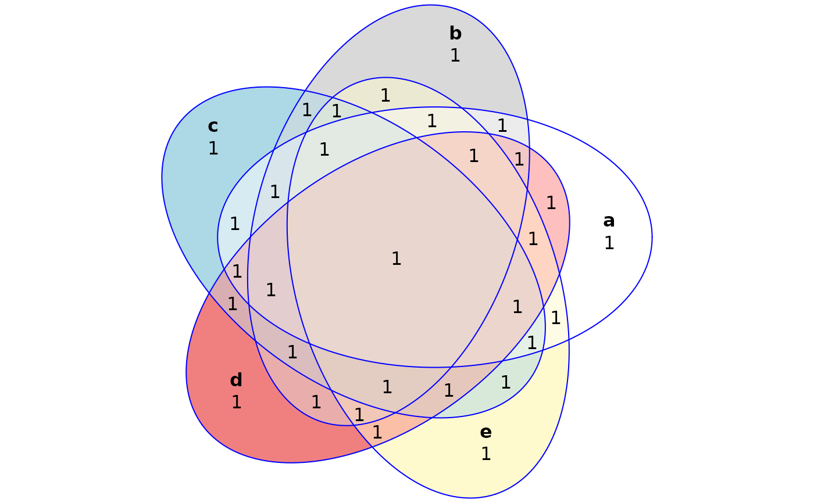

This function fits Venn diagrams using an interface that is
almost identical to euler(). Strictly speaking,
Venn diagrams are Euler diagrams where every intersection is visible,
regardless of whether or not it is zero. In almost every incarnation of
Venn diagrams, however, the areas in the diagram are also
non-proportional to the input; this is also the case here.
venn(combinations, ...)
# S3 method for default
venn(
combinations,
input = c("disjoint", "union"),
names = letters[length(combinations)],
...
)
# S3 method for table
venn(combinations, ...)
# S3 method for data.frame
venn(
combinations,
weights = NULL,
by = NULL,
sep = "_",
factor_names = TRUE,
...
)
# S3 method for matrix
venn(combinations, ...)
# S3 method for list
venn(combinations, ...)set relationships as a named numeric vector, matrix, or data.frame (see methods (by class))
arguments passed down to other methods
type of input: disjoint identities
('disjoint') or unions ('union').
a character vector for the names of each set of the same
length as 'combinations'. Must not be NULL if combinations is a
one-length numeric.
a numeric vector of weights of the same length as
the number of rows in combinations.
a factor or character matrix to be used in base::by() to
split the data.frame or matrix of set combinations
a character to use to separate the dummy-coded factors if there are factor or character vectors in 'combinations'.
whether to include factor names when constructing dummy codes
Returns an object of class 'venn', 'euler' with items
a matrix of h and k (x and y-coordinates for the
centers of the shapes), semiaxes a and b, and rotation angle phi
set relationships in the input
set relationships in the solution
default: a named numeric vector, with
combinations separated by an ampersand, for instance A&B = 10.
Missing combinations are treated as being 0.
table: A table with max(dim(x)) < 3.
data.frame: a data.frame of logicals, binary integers, or
factors.
matrix: a matrix that can be converted to a data.frame of logicals
(as in the description above) via base::as.data.frame.matrix().
list: a list of vectors, each vector giving the contents of
that set (with no duplicates). Vectors in the list do not need to be named.
# The trivial version
f1 <- venn(5, names = letters[1:5])
plot(f1)

# Using data (a numeric vector)
f2 <- venn(c(A = 1, "B&C" = 3, "A&D" = 0.3))
# The table method
venn(pain, factor_names = FALSE)
#> 3 set Venn diagram
#>
#> h k a b phi
#> widespread -0.42 -0.36 1.05 1.05 3.76
#> regional 0.42 -0.36 1.05 1.05 3.76
#> male 0.00 0.36 1.05 1.05 3.76
# Using grouping via the 'by' argument through the data.frame method
venn(fruits, by = list(sex, age))
#> female.adult
#> 3 set Venn diagram
#>
#> h k a b phi
#> banana -0.42 -0.36 1.05 1.05 3.76
#> apple 0.42 -0.36 1.05 1.05 3.76
#> orange 0.00 0.36 1.05 1.05 3.76
#> ------------------------------------------------------------
#> male.child
#> 3 set Venn diagram
#>
#> h k a b phi
#> banana -0.42 -0.36 1.05 1.05 3.76
#> apple 0.42 -0.36 1.05 1.05 3.76
#> orange 0.00 0.36 1.05 1.05 3.76
#> ------------------------------------------------------------
#> male.adult
#> 3 set Venn diagram
#>
#> h k a b phi
#> banana -0.42 -0.36 1.05 1.05 3.76
#> apple 0.42 -0.36 1.05 1.05 3.76
#> orange 0.00 0.36 1.05 1.05 3.76
#> ------------------------------------------------------------
#> female.child
#> 3 set Venn diagram
#>
#> h k a b phi
#> banana -0.42 -0.36 1.05 1.05 3.76
#> apple 0.42 -0.36 1.05 1.05 3.76
#> orange 0.00 0.36 1.05 1.05 3.76
# Using the matrix method
venn(organisms)
#> 5 set Venn diagram
#>
#> h k a b phi
#> animal 0.176 0.096 1 0.6 0.000
#> mammal -0.037 0.197 1 0.6 1.257
#> plant -0.198 0.026 1 0.6 2.513
#> sea -0.086 -0.181 1 0.6 3.770
#> spiny 0.145 -0.137 1 0.6 5.027
# Using weights
venn(organisms, weights = c(10, 20, 5, 4, 8, 9, 2))
#> 5 set Venn diagram
#>
#> h k a b phi
#> animal 0.176 0.096 1 0.6 0.000
#> mammal -0.037 0.197 1 0.6 1.257
#> plant -0.198 0.026 1 0.6 2.513
#> sea -0.086 -0.181 1 0.6 3.770
#> spiny 0.145 -0.137 1 0.6 5.027
# A venn diagram from a list of sample spaces (the list method)
venn(plants[c("erigenia", "solanum", "cynodon")])
#> 3 set Venn diagram
#>
#> h k a b phi
#> erigenia -0.42 -0.36 1.05 1.05 3.76
#> solanum 0.42 -0.36 1.05 1.05 3.76
#> cynodon 0.00 0.36 1.05 1.05 3.76